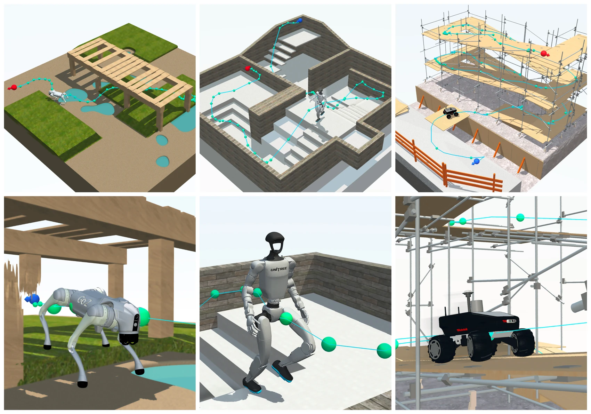

PoliMop
Policy-in-the-loop motion planning in 3D spaces for mobile robots. One planner discovers routes that reflect what each robot and control policy can do.
View projectSelected work

Policy-in-the-loop motion planning in 3D spaces for mobile robots. One planner discovers routes that reflect what each robot and control policy can do.
View project